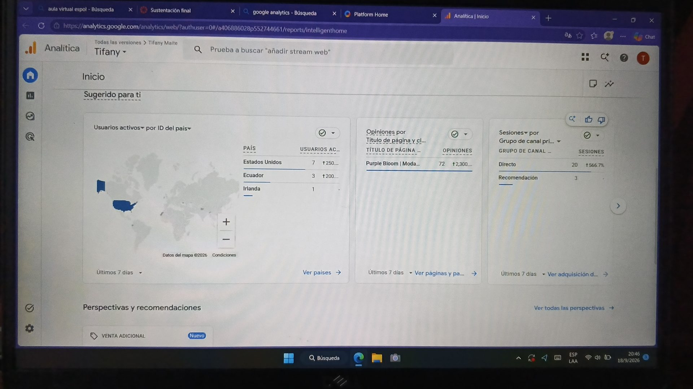
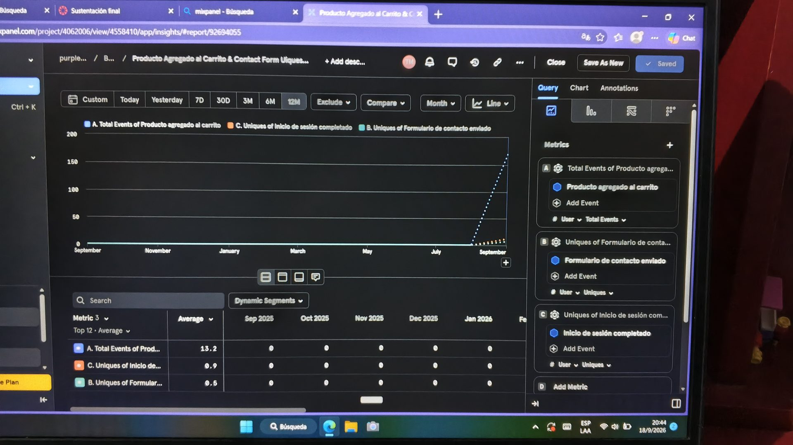
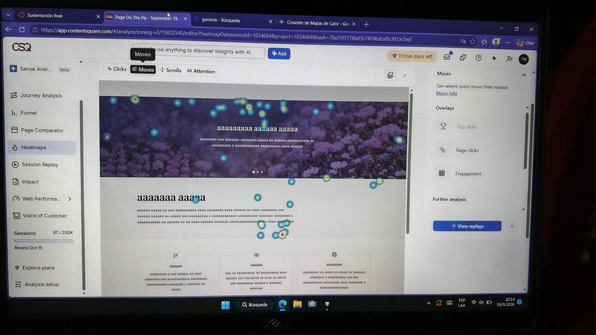

Tifany Maite · Purple Bloom
Proyecto publicado: Ver Purple Bloom en línea
¿Qué elementos comunican cómo se usan?
Explora el catálogo es sólido, del color de la marca, y su flecha se desplaza hacia la derecha al pasar el cursor o enfocarlo: indica que lleva a otra página.Iniciar sesión del encabezado tienen forma de botón (borde o relleno) y cambian de color al pasar el cursor.¿Qué patrones se repiten en todo el producto?
tokens CSS compartidos, con modo claro y oscuro; los botones primarios (Confirmar compra, Entrar, Explora el catálogo) usan el mismo color y forma.¿Cómo sabe el usuario que su acción tuvo efecto?
Entrar pasa a Entrando…, aparece ¡Hola, Ana! Sesión iniciada y el encabezado muestra un avatar con la inicial de la usuaria.¿Cómo guía la interfaz la atención del usuario?
brillar), y el texto secundario va más pequeño y en un tono atenuado.Explora el catálogo, Confirmar compra); las demás son enlaces o botones de contorno.
Qué muestra: los últimos 7 días desde que publiqué en Netlify: usuarios activos por país (Estados Unidos 7, Ecuador 3, Irlanda 1), 72 opiniones sobre la página Purple Bloom | Moda… y sesiones por canal (Directo 20, Recomendación 3).

Qué decidí medir: tres eventos personalizados que recorren el embudo de la tienda: Producto agregado al carrito (interés de compra), Formulario de contacto enviado y Inicio de sesión completado (intención de crear relación con la marca). Analytics no capta estas acciones por defecto, y así puedo ver cuántas personas pasan de mirar a actuar.

Qué muestra: mapa de calor de movimientos (Moves) de la página principal, en Contentsquare (la plataforma de Hotjar): el cursor se concentra en el título del carrusel de portada y en el bloque de texto y tarjetas de debajo, es decir, donde está la propuesta de valor.